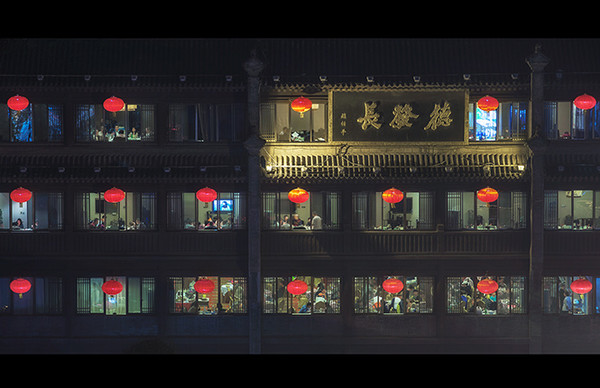
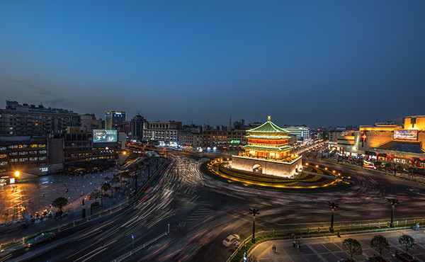

首页
西安：旧长安的画皮
西安：旧长安的画皮

八十岁的外婆，晚上的呼噜声比钟声还响。我们白天去城墙，我忙着拍照，她常常把我一人甩在后面。或者我一个不留心，她又钻进了哪个小店，害我一人在大街上干着急。“她利索得像个男子。”我爸常这么说。于是也丝毫不担心我独自一人带她出门远行。

跨年夜的西安灯火通明华灯溢彩，这个节点和外婆回到西安，可以听钟鼓楼。祈福钟声已经响过12下。就在刚才，钟鼓楼广场上震耳欲聋的电子乐突然停了，钟声几乎踩着DJ那个被掐断的电音接踵而至。多么沉而深远的钟声呀，在这个偌大的西安城里，是黑夜中一波一波的海浪，以钟楼为原点，向外推进，匍匐于路上，游荡于城墙，冲刷掉天上的浮云，洗出了千年前的那个月亮。
作者：
续来来
文字工作者，资深媒体人。长期伏案，长期旅行，长期写作。
专栏最热文章
夏木尼，小王子的玫瑰城市
暹粒油淋鱼
西安：旧长安的画皮
漫山岛
胡日尔镇的美术馆
专栏其他作者
袁云准
旅日青年国际政治研究学者，草食男青年一只，
偏爱东瀛文化之纤细，孤身远行，游学定居于此，目前于东京某大学潜心钻研政经外交；
学术研究事务繁杂多忙，但凡有闲，定背包出行转换心情。
徐冉
荷兰小伙儿，艺术大学毕业，小众文艺男一枚； 曾在亚洲背包旅行十五个月，现在在北京学习中文。
斑马疆湖
斑马小姐与斑马先生，一行两人；独立撰稿、摄影纪实，专注南疆旅游文化。